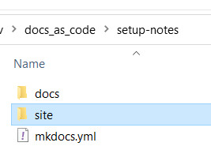

mkdocs how-tos
installing mkdocs
on Dell pc, where python was installed by itself, and available from a general command prompt, just installed it with pip install mkdocs
on Lenovo, where python was installed via anaconda, and available only from an anaconda prompt, used an anaconda prompt (base environment) and the command (taken from https://anaconda.org/conda-forge/mkdocs):
conda install -c conda-forge mkdocs
It gave me the usual info about what was going to happen, and I told it to proceed:

one that was done, I could see with mkdocs --version that it had been installed:

creating a mkdocs project
next (always in the anaconda prompt) I cd'ed into the folder under which I want to create my mkdocs project, which is called docs_as_code:
now with mkdocs new setup-notes I can create my project:
(nb if I am already in my desired project folder I can also use mkdocs new .
this will create the yml file directly inside the current folder and the docs folder underneath it)
This creates a folder called setup-notes with directly inside it the yml configuration file and the docs folder where all the markdown source files will go.

Now, if I cd into the setup-notes folder, I can issue the mkdocs serve command (nb in this example all is being done in an anaconda prompt, but if python and mkdocs were installed differently it would be done under a regular command prompt):

and opening up that url will show a preview of what the site would look like (for now just with the contents of the default index.md file located under docs).
yaml config file settings (initial ones)
by default the mkdocs.yml file contains only the mandatory site_ _name setting:

use of the config file is documented fully at https://www.mkdocs.org/user-guide/configuration/
however there are a few settings it is important to configure for my particular setup:
- use_directory_urls should be set to false: the default true setting does not play well with image paths in markdown notes
- the theme should be changed to readthedocs (rather than the default mkdocs)

The reason is that readthedocs has a nice navigation pane on the left.

adding content subfolders to the project
at present the only content my new project has in its docs folder is the default index.md file. But for example I could copy the folder of these how-to notes into the docs folder of the empty project, to obtain the following result:

now, in addition to the index.md file, the docs folder contains a subfolder, which in its turn contains a markdown file and some image files (these notes).
Now, when I do mkdocs serve the navigation pane shows me not just "Welcome to MkDocs" (the default index.md file) but also the mkdocs how-tos. This is the result you get without any nav settings in the yaml config file, just with autodiscovery of all the .md files in the docs tree. The all caps MKDOCS HOWTOS is not clickable, it just corresponds to the subfolder. The lowercase mkdocs how-tos corresponds to the actual .md file in the folder.
In any case, you can control what appears in the left-hand menu with the nav settings, this is just to show what happens automatically. In summary:
- each subfolder under docs turns into an all-caps, unclickable heading in the navigation pane.
- each markdown file appears in the navigation pane grouped under its appropriate subfolder heading, and with a clickable hierarchical structure that corresponds to the level 1 (#) heading on top (not the md filename) and the lower level headings (##, ### etc) under it.

improving the navigation pane
set collapse_navigation to false
Notice how, by default, you can only see the inner structure of the currently selected item in the navigation pane:

You can change this behavior by setting collapse_navigation to False. (nb this is a subsetting for the theme, not a top-level setting like site_name):
site_name: docs as code setup notes
use_directory_urls: false
theme:
name: readthedocs
collapse_navigation: false
With collapse navigation set to false, you can expand the internal subheadings of any file in the navigation bar, not just the currently selected one:

add custom css
a confusing aspect of this navigation pane is that the items representing the markdown files are not indented relative to the upper-case heading that represents the containing folder .
To fix this, we can add a css subfolder to the docs folder that contains a file extra.css where we tweak the style as follows:
/* custom css for readthedocs theme navigation sidebar */
.caption {
color:orange;
margin-left: -10px;
}

And in the yaml file we have to specify that this extra.css exists with:
extra_css:
- css/extra.css
this lets us achieve a little indent, so the text of the folder name (now orange) is now a little to the left of the text of the markdown files.

building the site
so far we have only looked at a preview with the mkdocs serve command.
we can now use mkdocs build to create the actual html static site. As a result of this command we get a site folder added to our project folder:

The folder structure of docs is retained, except that every markdown file now corresponds to an html file (with the same name):
deploying to github
create the empty repo on github
for this purpose, I created a repository on github called docs-as-code (note, with the dashes rather than the underscores)

I just added a readme file, but apart from that the new repo on github is empty
clone the new repo to local machine
on my local machine, I open up a command prompt (regular, not anaconda, since this is for git) in the WebDev folder, where I want to clone the new docs-as-code repo.
git clone https://github.com/acnard/docs-as-code.git
as a result of this the remote is now cloned here:
if I cd into this folder and do git status I get:

gitignore the site folder
I am going to copy into here the entire mkdocs project I created earlier, but I do not want to source-control anything in the site folder, which is just generated by the mkdocs build process.
at the top-level (same as the README.md file) I have to create a file called .gitignore with the contents:
site/
add the yml config file and docs folder structure to the repo
now I can copy in my mkdocs project basically (for now I will not copy in the sites folder). So now it looks like this (with the files copied in from the mkdoc project highlighted in yellow):

if I do a git status it tells me that the files I've copied in are untracked:
These are all things I want to track so I can do:
git add -A
Then if I do another
git status
it shows me that all the new stuff needs to be committed

Now I can do a
git commit
git push
to get all this up onto github
check that site folder is properly ignored
for test purposes, let's create a site subfolder and put some files and subfolders in it:

and see what happens on git status:
in fact it does not tell me about these new untracked files (because they are not meant to be tracked)

to check which files are being ignored we can try the command:
git status --ignored --untracked-files=all
and it does indeed say it's ignoring all the files in site (and in its subdirectories):

appendix:
good practices for markdown files
There should be only one top-level heading (#) in each markdown file
summary of git workflow with branching
git fetchto check if there is anything updated on origin (if there is nothing, the command gives no output).git pullto retrieve changes from origin (remote repository)- when you start working on a feature, do
git branch branchnameto create a branche and thengit checkout branchnameto switch to that branch. - You can do
git branchto see a list of all the branches, the current one will have a star next to it. - Start making your changes on the branch.
- At any time, you can switch back to the main branch with
git checkout mainand it will put your files back exactly as they were before you started making those changes. - Add and commit your changes to the branch as usual, with
git add -Afollowed bygit commit. - When the changes in the branch are done (and all committed), and you want to merge them into the main stream:
- first do
git checkout mainto return to the main branch - then do
git merge branchname: this will bring the changes you made on the branch into your main stream. - Do a
git pushto update the remote. Note that the remote will not know about the branch you created as this was created and merged on the local machine before doing any push. I suppose it would know about it if you did a push while the branch was still unmerged.